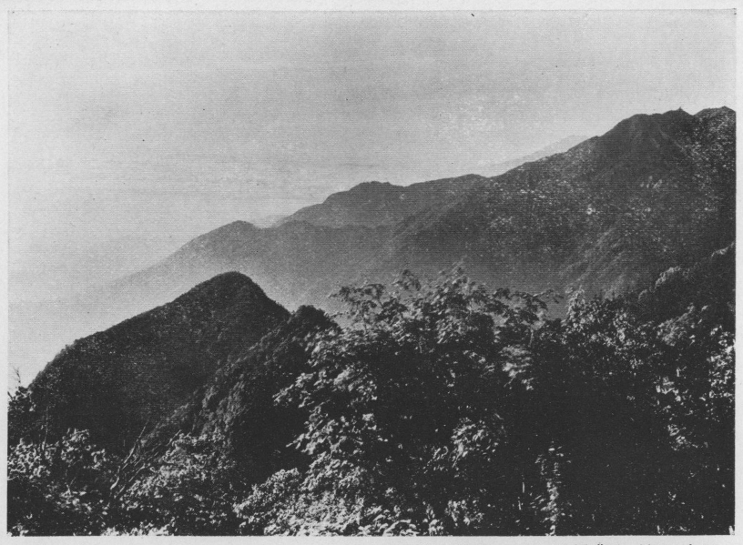

この旅の主眼とするところは花崗岩の山に登ることではあったが、最初に久恋の立山に登り、
駒ヶ岳のこの古い記行は、漢文調を真似た極めて簡略な記事である。それでも今読んで見ると、忘れている節を憶い出す助けとなることが少くないので、これを基として回顧の筆を加えることも一興であろうかと思って、
信濃の中央より南に亘りて、木曾川天竜川の間に蟠れる花崗岩の大山脈あり、其最高峰を駒ヶ岳といふ、高さ八千六百尺、火山の如き広漠たる裾野を有することなく、直に鬱勃崛起して天空を刺し、崢 たる峰巒半霄に磅
たる峰巒半霄に磅 して、石筍植うるが如く、危嶂時に其間に秀で、相頡頏して雲表に錯峙駢聳するさま、既に壮絶なるを覚ゆ、御岳の頂上よりして東に之を望めば、天色縹緲の間に嵯峨たる山峰の積翠を天外に湛へて、油然雲を吐くを見る、其山状の怪偉なる、吾未だ多く其比を見ず。山岳の高峻なるもの、ともすれば純骨を露はして、兀※［＃「石＋聿」、U+7849、491-9］たる岩石の外は、一木一草の青なく、徒に半天を掠めて転光景の凄愴たるに似もやらず、緑樹山の頂まで蔽ひて、翠を重ね紫を畳み、花崗岩の純白なるものと相映じ、秀色洗ふが如く、蔚乎たる峰勢飛動せんと欲す、若夫れ富岳を以て名山の標準となし、秀麗なる円錐形をなせる火山を以て、山の正なるものとせば、則花崗岩の諸山は其奇なるものに非るなきを得んや、想ふに太古にありて火山の磊
して、石筍植うるが如く、危嶂時に其間に秀で、相頡頏して雲表に錯峙駢聳するさま、既に壮絶なるを覚ゆ、御岳の頂上よりして東に之を望めば、天色縹緲の間に嵯峨たる山峰の積翠を天外に湛へて、油然雲を吐くを見る、其山状の怪偉なる、吾未だ多く其比を見ず。山岳の高峻なるもの、ともすれば純骨を露はして、兀※［＃「石＋聿」、U+7849、491-9］たる岩石の外は、一木一草の青なく、徒に半天を掠めて転光景の凄愴たるに似もやらず、緑樹山の頂まで蔽ひて、翠を重ね紫を畳み、花崗岩の純白なるものと相映じ、秀色洗ふが如く、蔚乎たる峰勢飛動せんと欲す、若夫れ富岳を以て名山の標準となし、秀麗なる円錐形をなせる火山を以て、山の正なるものとせば、則花崗岩の諸山は其奇なるものに非るなきを得んや、想ふに太古にありて火山の磊 たりしものも、星霜を経るの久しき、岩石漸く※［＃「雨かんむり／誨のつくり」、U+9709、491-14］爛して、苔を生じ土に掩はれ、遂に今日の観を呈するに至れりしも、其往往にて直截壁立、痛奇を極むること妙義戸隠の如くなるは、これ蓋し異数にして、所謂正中の奇なるものか。駒ヶ岳に至りては実に奇中の奇にして、景象の跌宕眺望の雄大、真に人の意表に出づるものあり、平常多くは曠茫たる裾野を有する火山をのみ看熟せるもの、忽ちこの奇秀に接す、その特に之を激賞する故なしとせんや。
たりしものも、星霜を経るの久しき、岩石漸く※［＃「雨かんむり／誨のつくり」、U+9709、491-14］爛して、苔を生じ土に掩はれ、遂に今日の観を呈するに至れりしも、其往往にて直截壁立、痛奇を極むること妙義戸隠の如くなるは、これ蓋し異数にして、所謂正中の奇なるものか。駒ヶ岳に至りては実に奇中の奇にして、景象の跌宕眺望の雄大、真に人の意表に出づるものあり、平常多くは曠茫たる裾野を有する火山をのみ看熟せるもの、忽ちこの奇秀に接す、その特に之を激賞する故なしとせんや。
たる峰巒半霄に磅して、石筍植うるが如く、危嶂時に其間に秀で、相頡頏して雲表に錯峙駢聳するさま、既に壮絶なるを覚ゆ、御岳の頂上よりして東に之を望めば、天色縹緲の間に嵯峨たる山峰の積翠を天外に湛へて、油然雲を吐くを見る、其山状の怪偉なる、吾未だ多く其比を見ず。山岳の高峻なるもの、ともすれば純骨を露はして、兀※［＃「石＋聿」、U+7849、491-9］たる岩石の外は、一木一草の青なく、徒に半天を掠めて転光景の凄愴たるに似もやらず、緑樹山の頂まで蔽ひて、翠を重ね紫を畳み、花崗岩の純白なるものと相映じ、秀色洗ふが如く、蔚乎たる峰勢飛動せんと欲す、若夫れ富岳を以て名山の標準となし、秀麗なる円錐形をなせる火山を以て、山の正なるものとせば、則花崗岩の諸山は其奇なるものに非るなきを得んや、想ふに太古にありて火山の磊たりしものも、星霜を経るの久しき、岩石漸く※［＃「雨かんむり／誨のつくり」、U+9709、491-14］爛して、苔を生じ土に掩はれ、遂に今日の観を呈するに至れりしも、其往往にて直截壁立、痛奇を極むること妙義戸隠の如くなるは、これ蓋し異数にして、所謂正中の奇なるものか。駒ヶ岳に至りては実に奇中の奇にして、景象の跌宕眺望の雄大、真に人の意表に出づるものあり、平常多くは曠茫たる裾野を有する火山をのみ看熟せるもの、忽ちこの奇秀に接す、その特に之を激賞する故なしとせんや。余りにも多く画の多い字を用いたので、漢文科を志していた友人から、なぜ漢文で書かなかったと叱られた程である。『文選』を耽読していたのと、どうも
山勢の奇抜此の如し、是を以て峭壁至る所に峙ち、千仭削り成して長屏を囲らすが如く、冉々として岫を出づる白雲の低く懸崖の半に揺曳して、宛然神仙の雲梯を架するに似たるを見る、加ふるに潤沢せる草樹の間より流れ出づる幾多の渓流は、淙々として急激なる斜面を奔下し、尽く懸りて飛瀑をなし、危岩の突出せるに遇ひては乱糸となり素絹となり、層々相趁うて墜落すること数十丈、更に集りて藍を せる一道の迅流となり、大塊に砕けたる花崗岩の幾んど楕円形となれるが中を屈折流駛して、終に木曾川天竜川に入る、其水や清冷に、其石や純白に、山水の景致是に至りて其美を極むといふべし。
せる一道の迅流となり、大塊に砕けたる花崗岩の幾んど楕円形となれるが中を屈折流駛して、終に木曾川天竜川に入る、其水や清冷に、其石や純白に、山水の景致是に至りて其美を極むといふべし。
せる一道の迅流となり、大塊に砕けたる花崗岩の幾んど楕円形となれるが中を屈折流駛して、終に木曾川天竜川に入る、其水や清冷に、其石や純白に、山水の景致是に至りて其美を極むといふべし。これは少し山を登ったことのある人ならば、地図を按じて紙上に筆を走らすことを得可き概念的な記事に近いものである。何か漢文の記行を読んで、
吾既に御岳を攀ぢて遍く山巓の奇勝を探り、地獄谷の噴煙を視、中山道を下りて其夜は寝覚の里に宿り、明れば八月十五日、駒ヶ岳へと志し、一渓流に沿ひ登ること半里ばかり、敬神の瀑を見る、更に登ること二里、熊笹を排し、矮樹を踏みて進み行けば、枯木自ら僵 れて 竜路に横たはり、土柔かに苔潤ひ、老檜枝を交へて崇軒高聳し、白日猶ほ暗く、習習たる冷風谷より吹き上りて、白露衣襟に落つるなど、浮世に遠き山中とて、早くも秋の音づれてや、こゝかしこの岩蔭には萩、桔梗、女郎花などの名も知らぬ花の中に咲き匂ひて、をかしさいはむ方なけれども、山深くして鳥の声も稀なれば、神澄み骨冴えて、物とはなしに凄まじく、憩ひもあへず辿り行くに、途益急にして、樵夫の外には通ふ人もあらざればにや、蘚菌滑かなること粘土の如く、
竜路に横たはり、土柔かに苔潤ひ、老檜枝を交へて崇軒高聳し、白日猶ほ暗く、習習たる冷風谷より吹き上りて、白露衣襟に落つるなど、浮世に遠き山中とて、早くも秋の音づれてや、こゝかしこの岩蔭には萩、桔梗、女郎花などの名も知らぬ花の中に咲き匂ひて、をかしさいはむ方なけれども、山深くして鳥の声も稀なれば、神澄み骨冴えて、物とはなしに凄まじく、憩ひもあへず辿り行くに、途益急にして、樵夫の外には通ふ人もあらざればにや、蘚菌滑かなること粘土の如く、 転するもの数次、遂に巨巌の欹つありて、仄径縷の如くなるを過れば、金懸の小屋といふに達す。
転するもの数次、遂に巨巌の欹つありて、仄径縷の如くなるを過れば、金懸の小屋といふに達す。
竜路に横たはり、土柔かに苔潤ひ、老檜枝を交へて崇軒高聳し、白日猶ほ暗く、習習たる冷風谷より吹き上りて、白露衣襟に落つるなど、浮世に遠き山中とて、早くも秋の音づれてや、こゝかしこの岩蔭には萩、桔梗、女郎花などの名も知らぬ花の中に咲き匂ひて、をかしさいはむ方なけれども、山深くして鳥の声も稀なれば、神澄み骨冴えて、物とはなしに凄まじく、憩ひもあへず辿り行くに、途益急にして、樵夫の外には通ふ人もあらざればにや、蘚菌滑かなること粘土の如く、転するもの数次、遂に巨巌の欹つありて、仄径縷の如くなるを過れば、金懸の小屋といふに達す。御岳の頂上から黒沢口を下って、福島に着いたのは午後二時半であった。未だ日も高いし、駒ヶ岳へ登るには
越前屋に戻ると、部屋に案内されてまだ腰もおろさぬ
「お客さん、そばでお泊りか、御飯でお泊りか」
ときかれて、何の事か
座敷を見廻すと床の間の柱にくくり付けられた五、六本の篠竹に、子供が書いたらしい七夕の色紙が下げてあった。明日が旧暦の七夕に当るのである。其色紙に書いてある文字が何と木曾義仲、源義経、楠正成といったように多くは武将の名であって、漸く天の川と書いたのがあったかと思うと、今度は木曾川、吉野川などと川の名が挙げてある。これには七夕様も驚くことであろう。上松で見たものも大抵似たり寄ったりで、なかのりさんで名高い木曾の、しかも其頃の風習としては、興のさめる七夕祭りであると思った。
風呂から上るとそばが出た。見ると驚く可し、
暫くすると按摩がやって来た、これは用がないから断る。今度は小娘が花漬を売りに来た。見ると四角や
一人旅の心安さに朝の出立は
上松からの登路と合したことは少しも気付かず、しばし谷間を辿ったかと思うと、路は左を指して嶮しく急な上りとなり、忽ち昼も薄暗い檜の大深林の中に抱き込まれて了った。路とはいうものの一条の細径たるに過ぎない。それも或は灌木や
此処前に谷を瞰み、後に嵎を負ひ、樅檜奥深く繁り合ひて、木の下露も冷やかなり、吾直に入て主を呼び、膝を抱て共に談る。主石鼎に泉を汲みて茶を煮、蕈を羮にして飯を供す、芳香脆美、覚えず数杯を尽し、暫し憩ひてまた登る。石片危く畳み、樹根怪しく蟠り、漸く上るに従うて花崗岩の大塊交々天を衝て起ち、或は竦峙壁の如く、上に土壌を戴き、稚樅翠黛を粧ひ、或は襞層刀稜の如く、老樹石罅より生じて岩を攫み、根痩せ幹曲りて、直立することを得ず、直に岩面に沿うて俯伏し、往々にして岩を ぐるものあるに至る、其間雪よりも白き山百合の露を帯びて咲き残りたるは、唯これ仙女の笑を含みて立てるかと思はれ、白雲身をのせて徐々として登り行けば、天風衣を吹いて異薫身にしみわたり、清楚また人界のものにあらず、聞く山中の花木は豪健磊落なりと、今にして其言の謬らざるを信ず、吾曾て妙義の勝をたづね、之を攀づること前後三たび、深く山状の雄偉にして景象の変化あるに服せしが、是に至りて初めて駒ヶ岳の匹儔に非ざるを知りぬ。
ぐるものあるに至る、其間雪よりも白き山百合の露を帯びて咲き残りたるは、唯これ仙女の笑を含みて立てるかと思はれ、白雲身をのせて徐々として登り行けば、天風衣を吹いて異薫身にしみわたり、清楚また人界のものにあらず、聞く山中の花木は豪健磊落なりと、今にして其言の謬らざるを信ず、吾曾て妙義の勝をたづね、之を攀づること前後三たび、深く山状の雄偉にして景象の変化あるに服せしが、是に至りて初めて駒ヶ岳の匹儔に非ざるを知りぬ。
ぐるものあるに至る、其間雪よりも白き山百合の露を帯びて咲き残りたるは、唯これ仙女の笑を含みて立てるかと思はれ、白雲身をのせて徐々として登り行けば、天風衣を吹いて異薫身にしみわたり、清楚また人界のものにあらず、聞く山中の花木は豪健磊落なりと、今にして其言の謬らざるを信ず、吾曾て妙義の勝をたづね、之を攀づること前後三たび、深く山状の雄偉にして景象の変化あるに服せしが、是に至りて初めて駒ヶ岳の匹儔に非ざるを知りぬ。小屋から左に坂を下ること二、三町、一段と大きな木立が繁り合っている場所に岩の間から清水が湧き出している。それを汲んで来て小屋の外にある中凹になった大きな岩に湛えてあった。
一時間近くも話し込んで、いざ出立しようと腰を上げた途端に、御免というて上手から入って来たのは年のころ、四十五、六、白布を鉢巻とし、身長六尺に近い大入道で、鼠色の行衣に
其人は何でも尾張の春日井郡の者で、十年ばかり前から日本全国の神社仏閣の参拝を思い立ち、今が三度目とかの途中であるとの事であった。そして参拝した社寺では、必ず捺印して貰うことにしている。それも登山したものは頂上の印を押すのであるが、其印を備えて無い山が多い。この駒ヶ岳なども夫が無いのは甚だ不都合である。笈の中は捺印帖と野宿の時の自炊道具で、米は
斯くて途もなき巌角を踰え、物古りたる灌木の叉簇せる中を上り行くこと一里余にして、林茲に尽れば、雪かと見まがふばかりなる花崗岩もて、築き上げたらむが如き峻岳の 嶢として峙てるに、見渡す限り偃松生ひ続きて、蒼髯白沙に映じ、雷鳥其間に棲息し、壑を隔てゝ左に前岳、右に宝剣岳の※［＃「山／截」、U+5DBB、500-8］※［＃「山／（避−しんにょう）」、U+3814、500-8］たるを仰ぐ、その半腹には十数条の渓流枝を伸せる緑樹の間に懸りて、さながら白竜の夭※［＃「虫＋喬」、U+87DC、500-9］たるが如く、谷間に群れ飛ぶ岩燕も、渺として枯葉の舞ふに異ならず、下は千仭の谷底幽かに、上は万丈の碧落遠く、蒼茫潤沢の気騰々として
嶢として峙てるに、見渡す限り偃松生ひ続きて、蒼髯白沙に映じ、雷鳥其間に棲息し、壑を隔てゝ左に前岳、右に宝剣岳の※［＃「山／截」、U+5DBB、500-8］※［＃「山／（避−しんにょう）」、U+3814、500-8］たるを仰ぐ、その半腹には十数条の渓流枝を伸せる緑樹の間に懸りて、さながら白竜の夭※［＃「虫＋喬」、U+87DC、500-9］たるが如く、谷間に群れ飛ぶ岩燕も、渺として枯葉の舞ふに異ならず、下は千仭の谷底幽かに、上は万丈の碧落遠く、蒼茫潤沢の気騰々として らむと欲し、青嵐ひとり動く、既にして山勢俄かに蹙まり、双崖面を掠めて向ふところを知らず、僅に石脈の凹凸せるものに足を托し、駕して之を上れば、危石梁をなし、懸崖深く陥り、足を容るゝところなく、万木森然として唯其梢を瞰る、両手に石を抱き、匍匐して渡り過ぐるに体ふるひ足わなゝき、蓮蹇として纔に之を踰ゆることを得たり、山路の険悪なる未だ曾て此の如きものを見ず、御岳の第三火口に下るところ、赭岩壁立して崩石人と共に下り、頗る危険なれども、彼と此とを較ぶる時は、霄壌も啻ならざるに似たり、今よりして之を想ふも尚ほ冷汗背に浹きを覚ゆ。
らむと欲し、青嵐ひとり動く、既にして山勢俄かに蹙まり、双崖面を掠めて向ふところを知らず、僅に石脈の凹凸せるものに足を托し、駕して之を上れば、危石梁をなし、懸崖深く陥り、足を容るゝところなく、万木森然として唯其梢を瞰る、両手に石を抱き、匍匐して渡り過ぐるに体ふるひ足わなゝき、蓮蹇として纔に之を踰ゆることを得たり、山路の険悪なる未だ曾て此の如きものを見ず、御岳の第三火口に下るところ、赭岩壁立して崩石人と共に下り、頗る危険なれども、彼と此とを較ぶる時は、霄壌も啻ならざるに似たり、今よりして之を想ふも尚ほ冷汗背に浹きを覚ゆ。
嶢として峙てるに、見渡す限り偃松生ひ続きて、蒼髯白沙に映じ、雷鳥其間に棲息し、壑を隔てゝ左に前岳、右に宝剣岳の※［＃「山／截」、U+5DBB、500-8］※［＃「山／（避−しんにょう）」、U+3814、500-8］たるを仰ぐ、その半腹には十数条の渓流枝を伸せる緑樹の間に懸りて、さながら白竜の夭※［＃「虫＋喬」、U+87DC、500-9］たるが如く、谷間に群れ飛ぶ岩燕も、渺として枯葉の舞ふに異ならず、下は千仭の谷底幽かに、上は万丈の碧落遠く、蒼茫潤沢の気騰々としてらむと欲し、青嵐ひとり動く、既にして山勢俄かに蹙まり、双崖面を掠めて向ふところを知らず、僅に石脈の凹凸せるものに足を托し、駕して之を上れば、危石梁をなし、懸崖深く陥り、足を容るゝところなく、万木森然として唯其梢を瞰る、両手に石を抱き、匍匐して渡り過ぐるに体ふるひ足わなゝき、蓮蹇として纔に之を踰ゆることを得たり、山路の険悪なる未だ曾て此の如きものを見ず、御岳の第三火口に下るところ、赭岩壁立して崩石人と共に下り、頗る危険なれども、彼と此とを較ぶる時は、霄壌も啻ならざるに似たり、今よりして之を想ふも尚ほ冷汗背に浹きを覚ゆ。午後二時頃に小屋を立った。これから上は花崗岩の大塊が縦横に錯峙し、木は皆ねじけくねって如何にも高山らしい相を呈して来る。遠見場まで登ると林が尽きて一時に眺望がひらけ、全山雪のような花崗岩の細砂に掩われた駒ヶ岳の八合目から上が眼前に展開した。殊に三ノ沢岳から宝剣岳に
いたく疲れたりければ、暫し休息せんとて岩に腰打ち掛けたるまゝ、茫然として吾あるを知らざりしが、忽ち跫音渓間に起り、低く咆哮するものあるを聞く、怪しんで顧れば、渓に臨める巨巌の下に其色墨よりも黒き物の半身を顕はせるを見る、相去ること四百歩許、熟視すれば熊也。大に驚きて急ぎ身を岩蔭に潜め、屏息して之を窺ふ、暫くありてまた咆哮する声の聞えて、一頭の大熊徐ろに蒙茸を排き、渓のほとりを歩みつつも、既に吾を認めしものの如く、矚視之を久うして、終に灌木の中に入る、かゝる程に梢を渡る一陣の渓風、驀然として袂を捲き、肌に粟を生じて汗氷よりも冷やかに、鬼気人を襲ふかと覚えて、そゞろに心の急かるれば、遑しくこゝを立ちいで、俯伏せる偃松の間を右に上り左に廻りて、嶄巌の上を辿り行くこと二十余町、辛うじて前岳の頂に達し、頭を回して来路を俯せば、跡はいつしか白雲に埋れて、身は山上の孤客となり、千古変らざるの天風、嫋々として直に穹窿より流れ来り、斜陽われを照して、翠紫を畳める四山の落暉、月影よりも淡し。
この夜絶巓より九町下なる玉窪の小屋といふに宿り、駒ヶ岳神社の祠官の神龕を開くとて上松より登山せるものと会し、酒を汲み蕈を灸りつゝ夜もすがら語ふに、七月七日の月は宵より中天に懸り、皎々たる光雪の如き花崗岩を照し、白雲谷より谷を埋め来りて、をりふしは窓の下に訪るゝなど、身は陶然として広寒宮裏の仙かと疑はるゝに、樹梢を伝ふ猿の声、近く屋外に聞えて、いと哀なり。
この夜絶巓より九町下なる玉窪の小屋といふに宿り、駒ヶ岳神社の祠官の神龕を開くとて上松より登山せるものと会し、酒を汲み蕈を灸りつゝ夜もすがら語ふに、七月七日の月は宵より中天に懸り、皎々たる光雪の如き花崗岩を照し、白雲谷より谷を埋め来りて、をりふしは窓の下に訪るゝなど、身は陶然として広寒宮裏の仙かと疑はるゝに、樹梢を伝ふ猿の声、近く屋外に聞えて、いと哀なり。
玉窪の小屋に着いたのは五時頃であったろう。小屋はひっそりと閉ざされて人気もない。暫く四辺をぶらついている中に、主人が薬草採りから戻って来た。間もなく一人の若者を伴に神官が上松から登って来るし、日没近く土地の者らしい御岳講の連中が十二、三人やって来たので、小屋は賑わった。神官は下から持って来させた茄子、胡瓜などの野菜を分けて呉れる、私は小屋で酒を買って神前に供え、祝詞が済むと夫を下げて、神官と小屋の主人と私と、別室で互に酒を汲み交しながら、夜遅くまで話した。七日の月は中央に輝いて下界は一面の雲の海だ。ほろ酔いの頬には山上の夜気も心地よく感ずる、これで時々聞える猿の声だという
つとめて小屋をうち出で、巨巌の上に散在せる枝が枝を踏んで、白らみゆく光をたよりに攀ぢ登れば、猟々たる寒風雲霧を捲きて、咫尺の程も見えわかず、やゝ頂上に達して始めて風止み霧収り、山巓の曙色洗ふが如く、旭に映ゆる花崗岩の群巒脚下に簇立して、危峰削られ怪巌蟠り、峭壁峙ち飛瀑下り、崖上壁面尽く偃松を生じ、山腹に森列せる一帯の樹林、蓊蔚として凝黛を沈め、疎密相錯り、濃淡相接し、空翠愈明にして谷益邃かに、 として終る所を知らず、更に頭を挙げて眺矚すれば、四周の大嶺天を摩して起り、近くは御岳、乗鞍岳、白峰赤石の諸山、遠くは富士の高嶺、越の白山など、ひとしく双眸のうちに入り、澎湃として岳麓をめぐれる暁雲の上に其青螺を露はして、大海に泛べる孤島に似たるを見る、風物の雄大は更にもいはず、その眼界の宏壮なる、亦以て海内の偉観と称するに足る、巓の東北に一池あり、玉池といふ、めぐり十町ばかり、地層の陥没せる所に雨潦のたまりしものにして、その色堆藍の如く、青嶼其中に浮び、白沙水畔を彩り、風景の瀟洒なる山上の湖としも思はれず、其南に当りて宝剣岳突兀として立てり、巌角を躡みて之に登れば、始めて来往せる白雲の間より、天竜川の一条の銀蛇となりて南走するを望む。
として終る所を知らず、更に頭を挙げて眺矚すれば、四周の大嶺天を摩して起り、近くは御岳、乗鞍岳、白峰赤石の諸山、遠くは富士の高嶺、越の白山など、ひとしく双眸のうちに入り、澎湃として岳麓をめぐれる暁雲の上に其青螺を露はして、大海に泛べる孤島に似たるを見る、風物の雄大は更にもいはず、その眼界の宏壮なる、亦以て海内の偉観と称するに足る、巓の東北に一池あり、玉池といふ、めぐり十町ばかり、地層の陥没せる所に雨潦のたまりしものにして、その色堆藍の如く、青嶼其中に浮び、白沙水畔を彩り、風景の瀟洒なる山上の湖としも思はれず、其南に当りて宝剣岳突兀として立てり、巌角を躡みて之に登れば、始めて来往せる白雲の間より、天竜川の一条の銀蛇となりて南走するを望む。
として終る所を知らず、更に頭を挙げて眺矚すれば、四周の大嶺天を摩して起り、近くは御岳、乗鞍岳、白峰赤石の諸山、遠くは富士の高嶺、越の白山など、ひとしく双眸のうちに入り、澎湃として岳麓をめぐれる暁雲の上に其青螺を露はして、大海に泛べる孤島に似たるを見る、風物の雄大は更にもいはず、その眼界の宏壮なる、亦以て海内の偉観と称するに足る、巓の東北に一池あり、玉池といふ、めぐり十町ばかり、地層の陥没せる所に雨潦のたまりしものにして、その色堆藍の如く、青嶼其中に浮び、白沙水畔を彩り、風景の瀟洒なる山上の湖としも思はれず、其南に当りて宝剣岳突兀として立てり、巌角を躡みて之に登れば、始めて来往せる白雲の間より、天竜川の一条の銀蛇となりて南走するを望む。明る朝は少し荒れ模様であったが、日が出ると静穏になった。神官と連れ立って絶頂に登り、神祠の前にぬかずき、さて後ゆっくりと眺に耽った。天候が一変するらしく、高い巻雲や巻層雲が少し空に
古より山に登るもの、必ず日出を以て山上の一大奇観となし、嘆賞措かず、吾前人の文を読んで其記事に至る毎に、常に巻を掩うて其状を想見せずんばあらず、後閑を得て出遊するに及び、至る所の名山大岳、概ね之を攀ぢて其山上に一泊し、殆ど日出の真を窺ふことを得たり、然れども遂に奇たるを覚えず、信甲二州の諸岳の如き、共にこれ日本有数の高山にして、而も日出の時に於ける金縷錯乱の状は、雨後新霽のあした、海岸平地に於て見る所と大差なく、特に奇とするに足らざるなり、山上の壮景はもと日出其者に非ずして、寧ろ其前後に於ける自然の大観にあり、此大観を発揚して、光彩陸離たらしむるものは、実に水蒸気の変形たる雲にありとす、若夫れ払暁、高山の巓に立ちて四望せんか、東天漸く白くして曙色漸く洽く、よべの名残の星まづ消えゆくと見る程に、たゆたふが如き夜色も次第に沈み行きて、立ちこむる峰の横雲ほの白く見え渡り、浩渺として津涯を知らず、須臾にして太陽地平線に上れば、雲之と映発して五彩色 を成し、其上に画けるが如き峰頂の或は一峰秀立し、或は数峰岐峙するを見る、紛糾たる幾多の村落また脚下に点綴して、髣髴として隠約の間に在り、時に顧れば身もいつしか雲に駕して、歩虚の仙たらむとす、既にして朝風徐ろに面を払ふに至れば、雲之に伴うて層々浮動し、忽ちにして茫々一白、忽ちにして山湧き河流れ、千象万景得て端倪すべからず、山上の大観むしろ之に過ぐるものあらんや、彼の海や湖や、大岳の巓よりして之を望む、混沌一色、些の変化なく、如何ぞ美と称し奇と呼ぶを得んや、是に於てか初めて知る、古人の所謂「山不得水不生動」の句は、唯これ平地より山岳を仰望する時に於てのみ然るものにして、未だ移して以て山上の壮景を説く可からざることを、山は水あるべし、而も遂に雲なかる可からず。
駒ヶ岳の頂上でゆくりなくも素晴らしい雲海と、変幻極りなき其活動とを見て、日の出の礼讃者は多いが雲海の嘆美者がないのに業を煮やして書いたものであった。久保天随君の著わせる明治三十三年発行の『山水美論』を見ると、殆んど同じ事が書いてある。私と同感であったらしい。
かくて広闊なる頂上を徘徊して、自然の大観に俯仰し、天地間の美を極め、清風に嘯きて静に瞑思黙想すれば、宏遠の気象胸中に鬱積して、飄然として身の塵世にあるを忘る、唯神霊の境凡骨久しく駐る可らず、急ぎ路をもとめて宮田に下り、天竜川のほとりより瞻仰として顧れば、宝剣岳の尖頂雲表に出没して、吾を送るものゝ如きを見る。
宝剣岳を下りて伊那の小屋に少憩した後、午後一時に伊那の前岳から烏帽子山に通ずる路を
寝覚の里では蚊帳を釣らず、涼しさも身に適して
城跡は町を東南に抜けて、藤沢川を渡った
雨の中を黒河内に着いて、
明治十四年に登山した高橋白山の記行には、「戸台戸三、口十二」とあるが、其後一戸を減じたものか、二戸しか無かったように思う。教えられた人の家は、二軒の中でも構えの大きい方であろうと、これは誰しも想像する通り、私も川を少し離れて南向きの段丘の裾に建てられた、がっしりした板葺屋根の家に歩み寄った。入口から「今日は」と挨拶して土間に入ると、上り框に腰かけて何か相談していた五、六人の荒くれ男の目が一斉に私に注がれたので、少したじたじとなった。見ると框の横に大きな炉が切ってあり、その正面に熊の皮を敷いて、三十五、六歳かと思われる小肥りの男が雪袴の膝を組んでいた、それが主人であった。
「小松伝弥さんのお宅は」
「ここだよ」
主人が答えて怪訝な顔をする。訳を話して一泊を頼むとすぐ承知してくれた。
奥の間に通されて打ち寛いだところへ、七十
風呂から上って、縁に腰かけながら、元締と話をしていると、山から帰った人夫が大きな松茸を三、四本元締の前に差出した。それを受取りながら私に向かって、先生（彼は私を小学校の先生と判断したのだ）は字が書けるかと聞く、字位は書けるよと答える、それなら帳面の上書きを頼むと言われて、今更断る訳にも行かず、金銭出納帳、物品貸付帳、仕切帳、何帳、何帳と、先方のいうがままに十五、六冊書いてやった。いつの間にか人夫が五、六人寄って来て私を取り巻いている、元締は一冊を書き終る
明くる朝つとめて駒ヶ岳へと出で立つ。あるじが教にまかせ、河原伝ひに辿り行くに、岩ばしる渓流白泡をたゝせて、飛沫衣に濺ぎ、暁嵐峰より吹き下して、山気いとゞ冷やかなり。斯くて上ると二里許にして、赤河原といへる処に到れば、勾配は漸く急となり、赭色の岩盤より成れる磊※［＃「石＋可」、U+7822、513-3］たる河床は、層々相連りて乙字を重ねたる如く、迅流岩を噛み、水脈分れて五となり三となり、縦横に石壁を奔盪して、彼処には淵を湛へ、此処には瀑布を懸け、忽ち雪を飛ばし藍を沈め、※［＃「さんずい＋萠」の「くさかんむり」に代えて「山」、U+6F30、513-5］※［＃「さんずい＋（挈−刀−手）／石」、U+6E71、513-5］として流れ行くさまの凄まじきに、両山愈迫り来りて巌益高く、老檜天を刺し、古松互に枝を交へ、谷深くして日光を洩らさねば、松蘿 長く垂れ懸り、水烟模糊として、露の零つること滋く、巌華深く閉ざして、攀づるに道もなし。衣を搴げて流を渉り、崖樹の自ら僵れて略※［＃「彳＋勺」、U+5F74、513-8］となれるが上を渡りつゝも、行くこと十余町にして、渓流左右に分れ、右なるは花崗岩壁を摩して下り、石滑かに水駛し。左なるは相去ること六七町にして、谷の窮る処一条の素練を懸く、高さ五六丈許、その一瀉して下るさまいと壮快なり。乃ち右を取り進めば、七八町にして両岸削るが如く、懸崖眉を掠めて立ち、峭壁頭上を圧して、左顧右眄すれども、遂に路の覓む可きなし。返りて左渓に入り、右岸の岩壁を攀ぢ、辛うじて瀑の上に出づ。仰ぎ見れば其上流に当りて、更に一大瀑の懸るあり、密蔽せる樹枝に遮られて、僅に全豹の半を露せるに過ぎざるが如くなるも、目測するに十四五丈を下らず、赭壁鑿もてうがてるに似たれば、翼なくして超ゆ可からざる也、是に至りて始めて路の誤れることを知りぬ。このあたり栂檜の老樹茂りあひて、古松其間に枝を交へ、苔むす巌は露に霑ひ、嵐気霏々として袂に寒き山おろしに、松釵雨よりもしげくわが肩の上にこぼれ懸るなど、初秋のあはれ一しほ深くや。
明くる十八日は、朝は快晴、昼頃から大嵐という、どちらの意味からも素晴らしい天気であった。顔を洗いに河へ行くと、昨日の雨に水量は著しく増しているが、少しの濁りも帯びていない。伊那方面で前岳と呼んでいる仙丈岳の頂は見えないけれども、河の正面の奥の方に、山と山とが重なり合っている間から、雪が降ったのではないかと思われる真白な八合目あたりから上を崇厳に現わしているのは、このあたりでは
大きな握飯を十二、これは屏風岩の小屋に人の居なかった場合を考えて、三食分を用意したのだった。庭に生えている木からもぎ取った林檎が十五、これは山には水がないからと心配したお婆さんの親切からであった。これで支度が整うと、登路の略図を描いた一枚の半紙をしっかと懐に入れて、この今も忘れ難いなつかしい家を後にした。縁先まで見送りに出たお婆さんは、無事に下山したら必ず端書を出すようにと繰り返していった。
黒川（戸台川）を右に左に五、六回も
左の谷に在る瀑は、青葉越しに既に遠方から見えていた、其印象は鮮かに残っている。五万分一の図に拠れば、しかし入口からでなければ見えない筈である。何時の間にか左の谷に入り込んだのを知らずに
岩頭に踞してしばし疲れたる足を休む。空いつしか曇り来りて、今にも降り出でむさまなりしが、南の方前岳の頂を超えて、徐々と湧き出でたる一団の叢雲は、見る／＼左右に広まりて一層は一層よりも黒み渡り、いとおもしろく其形を変へつゝ、やがて大空の半にもや達しけむ頃、吹き下す天風に逆らひたるにや、雲行忽ち乱れて驀然として北の方にたなびき、始はたゆたふが如くなりしも、後には秋洪の千里を浸すが如く、浩滔として進み来り、しかも其中に嵐を孕み霹靂を載せて、 渤自ら禁ずる能はざらんとし、稍灰色を帯び来りたる下層の雲まづ雨となりて、空中に一大水晶簾を懸くるや、暗黒の色を湛へたる上層の雲は、俄に洶湧滾闘して、或は前駆し或は却走し、盤旋しばらくも止まらず、漸くにして白味の加はると共に其端低く垂れて、終に森然たる雨柱となり了る。吾は長立して凝※［＃「目＋帝」、517-5］すること多時、覚えず傘を揮って天を劃し、快哉を絶叫すること幾度、余響未だ収まらざるに、風颯とおとし来りて、冷気習々、倏にして雨車軸を流し、滂沱たる雨声を乱して、時に殷々たる迅雷の響き渡れるさへあるに、坤軸をも震はしつべき暴風は、轟々として谷中より起り、陰霧を駆り暗雲を走らせ、四近の老木を捲いてさかしまに吹き上ぐれば、枝は凄まじく鳴り渡りて、木の葉ちぎれ飛ぶこと百千の蝗の如く、何処ともなく木魅の嘯くに似たるを聞く。雨又益加はり、濃霧峡中に充満して、晦冥呎尺をもわくべからず、纔に身を岩蔭に托して、閃々たる紫電の光に見上れば、右の方十仭の峭壁削立して、崖上に孤聳せる一大樹の矗々天を突けるが、今しも黒雲の間より其姿を顕はして巨人の如く立てるを見るのみ、峰巒や重嶂や遂に其の処を知らず。吾は今更ながら自然の力のいとも大なるを感じ、暝目して耳辺に風雨の荒れすさぶ音を聞きつゝ、魔王波旬のあらゆる障礙にも動かさるゝことなく、菩提樹下に金剛座をしめて、想を寂光の彼岸に馳せ、涅槃微妙の道に到達して仏となりたまひけむ世尊の昔を偲び、身はいつしか一切苦悩を脱離して、魂は靉靆たる紫雲の裡に包まれ、兜率の外院に常世の春を迎え得たらむ心地もかくや、恍惚としてしばしは吾あるを忘れたりしが、几体終に天上の仙と同じからで、霊は肉に克つよしもなく、覚め来れば五欲尚ほ累をなし、身は依然として六塵の巷に在り、無上正覚の地とこしなへに望む可からざるか、よしさらば飄として雲表の峻岳を攀ぢ、しばらく吾が
渤自ら禁ずる能はざらんとし、稍灰色を帯び来りたる下層の雲まづ雨となりて、空中に一大水晶簾を懸くるや、暗黒の色を湛へたる上層の雲は、俄に洶湧滾闘して、或は前駆し或は却走し、盤旋しばらくも止まらず、漸くにして白味の加はると共に其端低く垂れて、終に森然たる雨柱となり了る。吾は長立して凝※［＃「目＋帝」、517-5］すること多時、覚えず傘を揮って天を劃し、快哉を絶叫すること幾度、余響未だ収まらざるに、風颯とおとし来りて、冷気習々、倏にして雨車軸を流し、滂沱たる雨声を乱して、時に殷々たる迅雷の響き渡れるさへあるに、坤軸をも震はしつべき暴風は、轟々として谷中より起り、陰霧を駆り暗雲を走らせ、四近の老木を捲いてさかしまに吹き上ぐれば、枝は凄まじく鳴り渡りて、木の葉ちぎれ飛ぶこと百千の蝗の如く、何処ともなく木魅の嘯くに似たるを聞く。雨又益加はり、濃霧峡中に充満して、晦冥呎尺をもわくべからず、纔に身を岩蔭に托して、閃々たる紫電の光に見上れば、右の方十仭の峭壁削立して、崖上に孤聳せる一大樹の矗々天を突けるが、今しも黒雲の間より其姿を顕はして巨人の如く立てるを見るのみ、峰巒や重嶂や遂に其の処を知らず。吾は今更ながら自然の力のいとも大なるを感じ、暝目して耳辺に風雨の荒れすさぶ音を聞きつゝ、魔王波旬のあらゆる障礙にも動かさるゝことなく、菩提樹下に金剛座をしめて、想を寂光の彼岸に馳せ、涅槃微妙の道に到達して仏となりたまひけむ世尊の昔を偲び、身はいつしか一切苦悩を脱離して、魂は靉靆たる紫雲の裡に包まれ、兜率の外院に常世の春を迎え得たらむ心地もかくや、恍惚としてしばしは吾あるを忘れたりしが、几体終に天上の仙と同じからで、霊は肉に克つよしもなく、覚め来れば五欲尚ほ累をなし、身は依然として六塵の巷に在り、無上正覚の地とこしなへに望む可からざるか、よしさらば飄として雲表の峻岳を攀ぢ、しばらく吾が神 を王にせん哉。
渤自ら禁ずる能はざらんとし、稍灰色を帯び来りたる下層の雲まづ雨となりて、空中に一大水晶簾を懸くるや、暗黒の色を湛へたる上層の雲は、俄に洶湧滾闘して、或は前駆し或は却走し、盤旋しばらくも止まらず、漸くにして白味の加はると共に其端低く垂れて、終に森然たる雨柱となり了る。吾は長立して凝※［＃「目＋帝」、517-5］すること多時、覚えず傘を揮って天を劃し、快哉を絶叫すること幾度、余響未だ収まらざるに、風颯とおとし来りて、冷気習々、倏にして雨車軸を流し、滂沱たる雨声を乱して、時に殷々たる迅雷の響き渡れるさへあるに、坤軸をも震はしつべき暴風は、轟々として谷中より起り、陰霧を駆り暗雲を走らせ、四近の老木を捲いてさかしまに吹き上ぐれば、枝は凄まじく鳴り渡りて、木の葉ちぎれ飛ぶこと百千の蝗の如く、何処ともなく木魅の嘯くに似たるを聞く。雨又益加はり、濃霧峡中に充満して、晦冥呎尺をもわくべからず、纔に身を岩蔭に托して、閃々たる紫電の光に見上れば、右の方十仭の峭壁削立して、崖上に孤聳せる一大樹の矗々天を突けるが、今しも黒雲の間より其姿を顕はして巨人の如く立てるを見るのみ、峰巒や重嶂や遂に其の処を知らず。吾は今更ながら自然の力のいとも大なるを感じ、暝目して耳辺に風雨の荒れすさぶ音を聞きつゝ、魔王波旬のあらゆる障礙にも動かさるゝことなく、菩提樹下に金剛座をしめて、想を寂光の彼岸に馳せ、涅槃微妙の道に到達して仏となりたまひけむ世尊の昔を偲び、身はいつしか一切苦悩を脱離して、魂は靉靆たる紫雲の裡に包まれ、兜率の外院に常世の春を迎え得たらむ心地もかくや、恍惚としてしばしは吾あるを忘れたりしが、几体終に天上の仙と同じからで、霊は肉に克つよしもなく、覚め来れば五欲尚ほ累をなし、身は依然として六塵の巷に在り、無上正覚の地とこしなへに望む可からざるか、よしさらば飄として雲表の峻岳を攀ぢ、しばらく吾が此日の颱風は、大正十三年十二月中央気象台刊行の『本邦気候表』に拠ると、瀬戸内海に突出した児島半島の西南部に在る
私は自分が果して異状体質者であるか否か、其道の人に診断して貰ったことがないので知らないが、特異な癖があって、体を適当
登山ではこの自己陶酔に
快哉に就て思い出すのは、対校レースでボートの練習をしていた時、文章では誰もよく快哉を叫んだと書くが実際は如何であったか。吾々は今後壮快であった場合には、必ず文字通り「カイサイ」を三唱しようというので、夫を実行していたことだ。其習慣が此処でも実行されたらしい。絶叫！ は少し疑わしいが。
斯くて待つこと幾時なりけむ、風雨やゝ衰へければ、再び両渓の合流する処に下る、と見れば傍に巨巌の峙つありて、其形少しく蟾蜍に似たり、今朝しも主が教へたるヒキ岩といへるはこれならんと、就て其周囲を探れば、果して綫の如き小径あり、唯榛莽深く之を蔽ひ、枯葉厚く堆積して、容易くそれと弁じ難きのみ。これより羊腸たる細径を辿りて、輪菌たる老樹の間を覚束なくも登り行けば、陰森の気肌を犯していと物凄く、天 怒号して万木皆鳴り、雲霧溟濠たり。吾を見ておどろき走る花金鼠に幾度か驚かされつゝ、登ること一里余りにして、喬木は灌木となり、灌木も亦いつしか偃松とかはり行きて、純骨を露はせる花崗岩の大塊縦横に紛錯し、
怒号して万木皆鳴り、雲霧溟濠たり。吾を見ておどろき走る花金鼠に幾度か驚かされつゝ、登ること一里余りにして、喬木は灌木となり、灌木も亦いつしか偃松とかはり行きて、純骨を露はせる花崗岩の大塊縦横に紛錯し、
 ※［＃「山／乍」、U+5C9D、520-14］※［＃「山＋咢」、U+5D3F、520-14］、景象自ら雄大を極め、秀霊の気身に逼るを覚ゆれども、雲深く雨滋くして、巍然たる山容は遂に望むべくもあらず。登山の最大快事は、目ざす高岳の絶巓に立ちて、八荒を睥睨するの際にあるは、もとより言ふ迄もなけれど、昼尚ほ暗きばかりに枝条密聚せる森林帯を離れて、意気はじめて豪なると共に、天風雲の帷を披きて、かの尋常の遊人には、惜みて容易に其神容を示さゞる霊岳の、孱顔うるはしく吾が前に立てるを、やをら仰ぎ見たる時の心地は、玄圃
※［＃「山／乍」、U+5C9D、520-14］※［＃「山＋咢」、U+5D3F、520-14］、景象自ら雄大を極め、秀霊の気身に逼るを覚ゆれども、雲深く雨滋くして、巍然たる山容は遂に望むべくもあらず。登山の最大快事は、目ざす高岳の絶巓に立ちて、八荒を睥睨するの際にあるは、もとより言ふ迄もなけれど、昼尚ほ暗きばかりに枝条密聚せる森林帯を離れて、意気はじめて豪なると共に、天風雲の帷を披きて、かの尋常の遊人には、惜みて容易に其神容を示さゞる霊岳の、孱顔うるはしく吾が前に立てるを、やをら仰ぎ見たる時の心地は、玄圃 苑の花蔭に天つ乙女の嫣然としてわれを邀へたらむも斯くやと覚えて、嬉しくもまた懐しくも、目こそ見ね耳こそ聞かね、手もて招き声ありて呼ばふが如くなるに、神馳せ魂飛び、満身の血潮は自ら高まりて、景仰の念思慕の情、油然として胸中に溢るゝを禁じ得ざる習なるは、一たび高山に登りたる人の忘れんと欲して能はざる所なる可し。曾て和田峠の巓より遥に東南の天を望み、駒ヶ岳の雲際に嶢たるを見て、神往に堪へず、心窃に他日の登躋を期せしもの、坤霊応あり、今や身親しく其土を蹈み、其嶮を攀づるに及びて、暴風雨の為に的
苑の花蔭に天つ乙女の嫣然としてわれを邀へたらむも斯くやと覚えて、嬉しくもまた懐しくも、目こそ見ね耳こそ聞かね、手もて招き声ありて呼ばふが如くなるに、神馳せ魂飛び、満身の血潮は自ら高まりて、景仰の念思慕の情、油然として胸中に溢るゝを禁じ得ざる習なるは、一たび高山に登りたる人の忘れんと欲して能はざる所なる可し。曾て和田峠の巓より遥に東南の天を望み、駒ヶ岳の雲際に嶢たるを見て、神往に堪へず、心窃に他日の登躋を期せしもの、坤霊応あり、今や身親しく其土を蹈み、其嶮を攀づるに及びて、暴風雨の為に的 たる山貌を咫尺の間に目睹する能はざりしわが遺憾は、嵯峨野の奥の情人をたづねてえ逢はざりし横笛が恨にも較ぶべくや。
たる山貌を咫尺の間に目睹する能はざりしわが遺憾は、嵯峨野の奥の情人をたづねてえ逢はざりし横笛が恨にも較ぶべくや。
怒号して万木皆鳴り、雲霧溟濠たり。吾を見ておどろき走る花金鼠に幾度か驚かされつゝ、登ること一里余りにして、喬木は灌木となり、灌木も亦いつしか偃松とかはり行きて、純骨を露はせる花崗岩の大塊縦横に紛錯し、※［＃「山／乍」、U+5C9D、520-14］※［＃「山＋咢」、U+5D3F、520-14］、景象自ら雄大を極め、秀霊の気身に逼るを覚ゆれども、雲深く雨滋くして、巍然たる山容は遂に望むべくもあらず。登山の最大快事は、目ざす高岳の絶巓に立ちて、八荒を睥睨するの際にあるは、もとより言ふ迄もなけれど、昼尚ほ暗きばかりに枝条密聚せる森林帯を離れて、意気はじめて豪なると共に、天風雲の帷を披きて、かの尋常の遊人には、惜みて容易に其神容を示さゞる霊岳の、孱顔うるはしく吾が前に立てるを、やをら仰ぎ見たる時の心地は、玄圃苑の花蔭に天つ乙女の嫣然としてわれを邀へたらむも斯くやと覚えて、嬉しくもまた懐しくも、目こそ見ね耳こそ聞かね、手もて招き声ありて呼ばふが如くなるに、神馳せ魂飛び、満身の血潮は自ら高まりて、景仰の念思慕の情、油然として胸中に溢るゝを禁じ得ざる習なるは、一たび高山に登りたる人の忘れんと欲して能はざる所なる可し。曾て和田峠の巓より遥に東南の天を望み、駒ヶ岳の雲際に嶢たるを見て、神往に堪へず、心窃に他日の登躋を期せしもの、坤霊応あり、今や身親しく其土を蹈み、其嶮を攀づるに及びて、暴風雨の為に的たる山貌を咫尺の間に目睹する能はざりしわが遺憾は、嵯峨野の奥の情人をたづねてえ逢はざりし横笛が恨にも較ぶべくや。瀑を下るのは、岩が濡れたので登る時よりも困難であった。懐中の略図を取り出して見ると、ヒキ岩は合流点の附近に描いてあるので、注意して探し
右側の藪を押し分け、じめじめした落葉を蹈んで二、三十間も登れば、岩の多い細径が曲折して続いている。もう擬う方なき登路である事が判明した。五、六町にして少し左の方へ廻ったかと思うと、突当りに五丈瀑と刻まれた二尺許の石の柱が建ち、其近く下に瀑が
この登路には古生層の岩が花崗岩と接触して地表に露出している所がある。駒津岳の北の肩もそうであるが、ここは鋸岳と同じように凄い色をした
少憩してまた登る。路右折して東南に向ひ、峰勢漸く蹙まりて、左右は削るが如き峭壁となり、壁面には白砂堆積して雪の如く、之を蹈めば砂は人と共に下り、愕いて石に身を托するも石また脱けて、急転直下、※［＃「石＋鞫のつくり」、U+25500、523-3］然として壑中に落ち去る。加ふるに樹木の遮ぎるものなければ、風の勢一きは激しく、ともすれば吾が双脚を払ひて、千仭の谷底に捲き落さんとし、次で豪雨の之に伴ふあり、万斛の潜水斜に注ぎ下して、空中に白羽箭を飛ばし、譬へば四大天王の雲に駕して、山妖木魅を駆るに似たり。中にも連山の巓を掠めて、遠く南溟の天より吹き来る一陣の烈風は、頗る腥 の気を帯ぶるもの也、
の気を帯ぶるもの也、 ※［＃「風にょう＋弗」、U+295BC、523-7］として襲ひ来り、山稜に撞撃して其巓を払ひ去るや、渓風之を邀へて、※［＃「風にょう＋牙」、U+98AC、523-8］然として谷底より起り、雲之と闘ひて盤旋※［＃「さんずい＋萠」の「くさかんむり」に代えて「山」、U+6F30、523-9］渤、さながら大海の荒れ狂ふが如く、乍にして紛絮渤、怒濤砕け散り、乍にして
※［＃「風にょう＋弗」、U+295BC、523-7］として襲ひ来り、山稜に撞撃して其巓を払ひ去るや、渓風之を邀へて、※［＃「風にょう＋牙」、U+98AC、523-8］然として谷底より起り、雲之と闘ひて盤旋※［＃「さんずい＋萠」の「くさかんむり」に代えて「山」、U+6F30、523-9］渤、さながら大海の荒れ狂ふが如く、乍にして紛絮渤、怒濤砕け散り、乍にして 漫滉瀁、藕糸乱れ布き、或は馳逐し或は狂奔し、上なる雲は次第に拡まりてうすれ行けど、下なる雲は更に勢を増して、むら／＼と渦き上り、奮搏摩盪して吾が立てる山稜の頂を超ゆるに至れば、列風また横さまに之を払ひ、雲塊半より頽れて谷中に弥漫し、風の稍静まると共に脚下に沛然たる雨声の恰も懸崖を直下する瀑布に似たるを聞く。既にして風雨少しく衰へ、頭上に鵬翼を張れるが如き断雲のちぎれちぎれに飛ぶを見たりしが、遥雷かすかに轟き、湿雲俄に開けて、南方里余のあたりに濃藍色をなせる怪雲の鬱然として天を蔽ふを望む。白峰山脈の最高峰北岳は最早雲中に包まれ、前岳またまさに隠れんとして、勁風の起れるなるべし、巓のあたり雲荐りに騒ぎて、景色只ならず。折しも一群の雨燕あり、相和鳴して高く中天に翔り、風に従って倏ち行く所を知らず。頃刻にして雲復大に湧き、寒冷の気面を搏って肌に粟を生じ、怪物の陸梁するかと覚しき一種のさゞめきは四方に満ちて、一刻は一刻よりも暗く、満目唯陰霾として、風雨またまさに来り襲はんとす、其光景もとよりわが拙き筆の能く及ぶところにあらず。森厳なる自然の威力に対して、眇たる人間誰かは懼然として懾れざるものあるべき。さはれ自然は竟に慈母たり、限りある人生を哀しみ、限りなき永遠を慕ふ心は、久しからずして之と相融合せんなり。斯く思ひつゝ吾は怡然として歩を喬岳の巓に運びぬ。
漫滉瀁、藕糸乱れ布き、或は馳逐し或は狂奔し、上なる雲は次第に拡まりてうすれ行けど、下なる雲は更に勢を増して、むら／＼と渦き上り、奮搏摩盪して吾が立てる山稜の頂を超ゆるに至れば、列風また横さまに之を払ひ、雲塊半より頽れて谷中に弥漫し、風の稍静まると共に脚下に沛然たる雨声の恰も懸崖を直下する瀑布に似たるを聞く。既にして風雨少しく衰へ、頭上に鵬翼を張れるが如き断雲のちぎれちぎれに飛ぶを見たりしが、遥雷かすかに轟き、湿雲俄に開けて、南方里余のあたりに濃藍色をなせる怪雲の鬱然として天を蔽ふを望む。白峰山脈の最高峰北岳は最早雲中に包まれ、前岳またまさに隠れんとして、勁風の起れるなるべし、巓のあたり雲荐りに騒ぎて、景色只ならず。折しも一群の雨燕あり、相和鳴して高く中天に翔り、風に従って倏ち行く所を知らず。頃刻にして雲復大に湧き、寒冷の気面を搏って肌に粟を生じ、怪物の陸梁するかと覚しき一種のさゞめきは四方に満ちて、一刻は一刻よりも暗く、満目唯陰霾として、風雨またまさに来り襲はんとす、其光景もとよりわが拙き筆の能く及ぶところにあらず。森厳なる自然の威力に対して、眇たる人間誰かは懼然として懾れざるものあるべき。さはれ自然は竟に慈母たり、限りある人生を哀しみ、限りなき永遠を慕ふ心は、久しからずして之と相融合せんなり。斯く思ひつゝ吾は怡然として歩を喬岳の巓に運びぬ。
の気を帯ぶるもの也、※［＃「風にょう＋弗」、U+295BC、523-7］として襲ひ来り、山稜に撞撃して其巓を払ひ去るや、渓風之を邀へて、※［＃「風にょう＋牙」、U+98AC、523-8］然として谷底より起り、雲之と闘ひて盤旋※［＃「さんずい＋萠」の「くさかんむり」に代えて「山」、U+6F30、523-9］渤、さながら大海の荒れ狂ふが如く、乍にして紛絮渤、怒濤砕け散り、乍にして漫滉瀁、藕糸乱れ布き、或は馳逐し或は狂奔し、上なる雲は次第に拡まりてうすれ行けど、下なる雲は更に勢を増して、むら／＼と渦き上り、奮搏摩盪して吾が立てる山稜の頂を超ゆるに至れば、列風また横さまに之を払ひ、雲塊半より頽れて谷中に弥漫し、風の稍静まると共に脚下に沛然たる雨声の恰も懸崖を直下する瀑布に似たるを聞く。既にして風雨少しく衰へ、頭上に鵬翼を張れるが如き断雲のちぎれちぎれに飛ぶを見たりしが、遥雷かすかに轟き、湿雲俄に開けて、南方里余のあたりに濃藍色をなせる怪雲の鬱然として天を蔽ふを望む。白峰山脈の最高峰北岳は最早雲中に包まれ、前岳またまさに隠れんとして、勁風の起れるなるべし、巓のあたり雲荐りに騒ぎて、景色只ならず。折しも一群の雨燕あり、相和鳴して高く中天に翔り、風に従って倏ち行く所を知らず。頃刻にして雲復大に湧き、寒冷の気面を搏って肌に粟を生じ、怪物の陸梁するかと覚しき一種のさゞめきは四方に満ちて、一刻は一刻よりも暗く、満目唯陰霾として、風雨またまさに来り襲はんとす、其光景もとよりわが拙き筆の能く及ぶところにあらず。森厳なる自然の威力に対して、眇たる人間誰かは懼然として懾れざるものあるべき。さはれ自然は竟に慈母たり、限りある人生を哀しみ、限りなき永遠を慕ふ心は、久しからずして之と相融合せんなり。斯く思ひつゝ吾は怡然として歩を喬岳の巓に運びぬ。刀利権現に着いたら、右へ尾根伝いに行きさえすれば、間違なく頂上へ出られると主人から聞いていたので、痩せた岩尾根が右へ曲る頃から注意して四辺に眼を配ったが、霧で何も見えない。然しもう刀利権現へ来たことは確であると安心したせいか、急に空腹を感じたので、稍平な場所にある大岩の蔭に風雨を避けつゝ握飯を取り出した。今日は実によく腹のへる日だ、途中歩きながらも食べた、見るともう握飯は四つ林檎は五つしか残っていない、明日のことを思えば気には懸るが当面の空腹には克てず、また握飯一つ林檎二つを平げてしまった。恐らくこの旺盛な食慾と豊富な食糧とのお蔭で、気力が衰えずに風雨を凌ぎ得たものであろうと考える。

●七丈ノ小屋（甲斐駒）より見たる鳳凰山と富士山
刀利権現からの登りはつらかった。殊に木も無い砂ばかりのざらざらした急峻な痩尾根の真中に、巨大な岩が幾つも突立っているのには困った。うっかり横を搦むと路を失う虞があり、また前途の見透しが利かぬから、行先にどんな危険が待ち構えているかも知れないので、一つ一つ岩をのり踰えて行った。其岩の表面が又ボロボロに風化していることが多く、手を懸る度に脆く崩れてそれと共に体が滑り落ち、幾度肝を冷したか知れなかった。
南風であった為か、瀑壺に落ちてずぶ濡れになって以来、衣物は絶えず生乾きであったにも拘らず、シャツに
雨を伴って断続する風のあいまに、まるっきり別のものかと想われるような一陣の烈風が吹いた。この風は生温い上に磯臭い香いがあって、温泉の湯気にむせるような感じがした。其風が唸りを生じて山稜の頂を薙ぎ払うと、風下の谷から濃厚な雲霧が噴泉の如く湧き上って、そこに風と雲との争闘が始まり、風の渦まきに連れて、虚空に奇怪な形をした雲が物の
卯の花の散りこぼれたるにや似たらむ白砂を蹈みつゝ勾配の急なる山脊に沿うて攀ぢ登ること二十余町、屡々巨巌の面を衝いて起るに遇ひ、手捫し足板して、風化せる花崗岩の上を躋り行くに、岩角忽ち崩れて跨躡するもの数次、漸くにして之を踰ゆれば、途一頓して稍平かに、偃松生ひ続きて、其間時に異草奇委卉の風雨に委して狼藉たるものあるを認む。なほ進むこと二町許にして急坂を登れば、終に三角測量櫓の下に達す、傍に円錐形をなせる一大花崗岩の屹立せるあり、即ち駒ヶ岳の絶巓にして、海抜殆ど一万尺、白峰山脈の一万余尺なるものを外にしては、全峡中また之と比肩す可き高峰あるなし、況んや吾震電雷動の日烈風暴雨を衝いて其巓を極め、幸に恙なし、此の如きの壮遊之を再びすべからず、憶うて是に至れば意気自ら千秋。
この紀行は未完成の儘にこれで終っている、前の「駒ヶ岳の記」に続けて雑誌に載せる
頂上に着いたのは四時頃であった。普通刀利権現から二時間の登りであるが、殆ど倍近く要している。測量の櫓は四本の柱がばらばらになって風に揺れながら霧の中に立っていた。左に廻ると小屋らしいものが目に入る、訝りながら近寄ると果して小屋であった、四尺程の高さに石を積み重ねて三方を囲い、東の一方が出入口で、勿論戸は閉まっていた。戸台では何の話もなかったが、測量の人達が泊っているに相違あるまい。野宿を覚悟していた私は、急に懐しくなって軽く戸を敲き、
「どなたかおいでになりますか、済みませんが今夜泊めて頂けないでしょうか、食べ物は持っているんですが」
と声をかけた、すると稍せき込んだ調子で、
「いかんいかん、ここは人を泊める所じゃない、一里半下れば小屋がある、さっきも一人下って行った、急げば間に合うから小屋に行きなさい」
少し怒ったような声である。私は山に登れば頂上に一泊して翌朝の大観を
「旦那はああ言ったが、わしが頼んで泊めてあげるから水を汲んで帰るまで待ってな」
と言い捨てて霧の中に歩み去った。何処まで水汲みに行くのか知らない。が、兎も角も待つことにして入口に立っていた。山の上とはいえ霧が深いので、日が暮れたように四辺が暗い。動かずにいる体が少し寒さを感じて来た頃、心あてに
小屋の中は六畳敷程の広さで、入口に続く一畳足らずの土間の外は、床板を張って
「ホウ、ちゃんと用意がしてあるんだね」
初めてむずかしい顔がほころびて、重い口から語られた所に拠ると、一昨日櫓に落雷して二人の測量手が感電し、一人は即死一人は瀕死の重傷を負うたのを、昨日漸く麓へ運び下ろした、一人では予定の通り仕事が
「天気が好ければ明日もやるから見ておいでなさい」と無愛想だが優しい人なのだ。心配事の最中に邪魔をして、相手が不機嫌だったからとて、之を咎める理由は少しもない筈である、私は後悔した。夕食は抜きにしようと思っていたが、熱い味噌汁を振舞われて見れば、食物の用意はあると言った手前、食べぬ訳に行かず、貴重な握飯の一つがまた減った。食後お礼心に残りの林檎を差し出して
夜が明けても風は止まない、高い雲から雨もポツポツ落ちていた。それが日の出る頃になって、雨は歇み霧もはれたので、前岳、北岳、地蔵、鳳凰、国師、金峰、八ヶ岳、蓼科の諸山は、頂を乱雲の上に顕し、鳳凰山塊を蹈まえて立つ幽な富士の姿は、幻のように美しかった。
しかし私をのけぞる程駭かしたものは、雲の厚襖を突き破って
午前五時に独り朝食を済して支度を整え、人夫に山の名など聞きながら、空模様を窺っていた、雲は容易に
しかし小屋は留守だった。中に入って探し廻っても、食べ物は何一つ見当らない、囲炉裏の自在に懸った鉄瓶の湯は冷え切っていた。止むなくそれを飲んで五銭の湯代を置き、暗い森林の中を暗い気持で急ぎ下った。笹ノ平まで来ると半ば朽ちた小屋があって、大きな荷物を傍に人が休んでいる。それが屏風小屋の主人であった。「この荷は米と乾うどんで、外に食物は持っていない、昼食は今すました。小屋の蒲団の間に菓子箱を入れて置いた筈だよ」といわれて、「どうもそこまでは気が付かなかった」と苦笑して別れた。もうあたりの景色などは目をくれるのみで、心にとめる余裕もなく、一刻も早く人里に出て
神前には紅白の落雁が四つ供えてある、三十銭を奉納してこの供物をいただき、弁当の残りだというみずやき（うどん粉を溶いた中に菜漬を入れて焼いたもの）を一つ老人から貰い受け、少し気力を恢復して、一里の暑い野原路を台ヶ原までまっしぐらに急いだ。
思えば食慾と空腹とに始終したような甲斐駒の山旅、幾十年をへだてて今この文を草していると、其時の苦しさがまざまざと記憶に蘇って来るのを感ずる。（明治二十九年十月稿、昭和十一年十月補）
（「木曾駒」――昭和一〇、一一 『登山とはいきんぐ』）
（「甲斐駒」――昭和一二、一 『山と渓谷』）